08/10/2023 — Có nên kích hoạt phòng thông tim không? Bài đố gồm 5 ca
Bản dịch tiếng Việt của bài "Should we activate the cath lab? A Quiz on 5 Cases." – Dr. Smith’s ECG Blog. Giữ nguyên toàn bộ 12 hình ảnh của bản gốc.
Hãy hình dung bạn vừa bắt đầu ca trực ở khoa cấp cứu (ED). Đó là một buổi chiều thứ Sáu bận rộn. Khu phân loại (triage) đang ùn ứ, và mới 10 phút sau khi bạn vào ca, một điều dưỡng khoa cấp cứu mang đến cho bạn vài bản điện tâm đồ chưa được bác sĩ nào đọc lại (overread).
Tất cả các bệnh nhân đều đến vì đau ngực, và tất cả đều đang ở khu phân loại.
Bệnh nhân nào (nếu có) trong số này bị OMI, có vùng cơ tim nguy cơ và cần PCI cấp cứu?
Điện tâm đồ #1

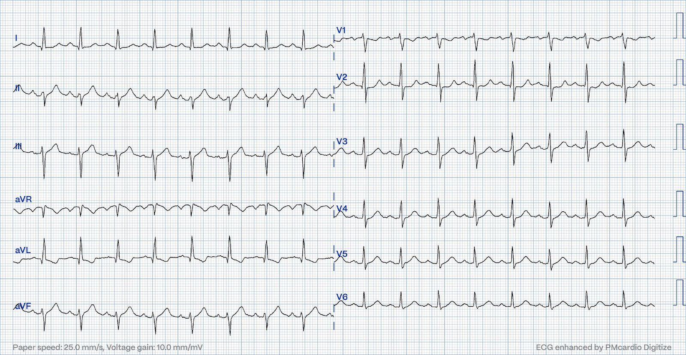
Điện tâm đồ #2

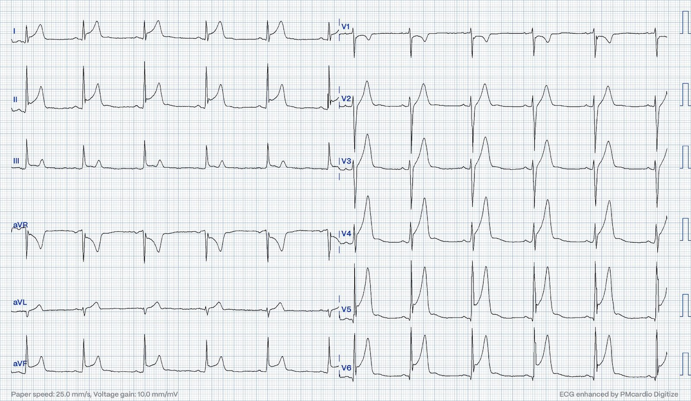
Điện tâm đồ #3

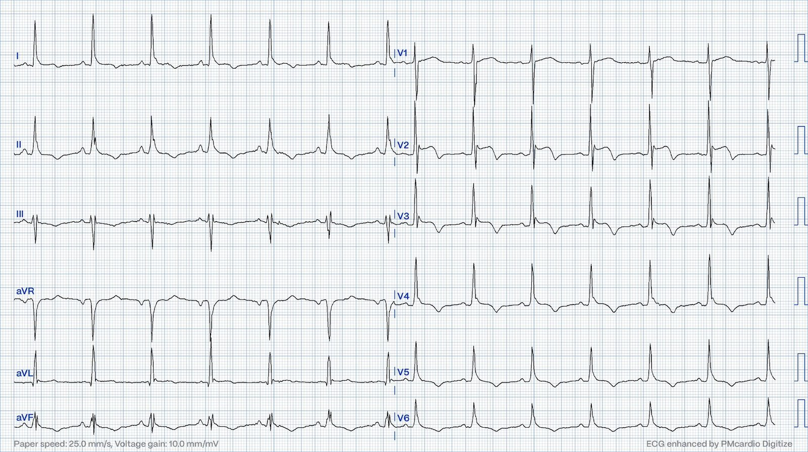
Điện tâm đồ #4

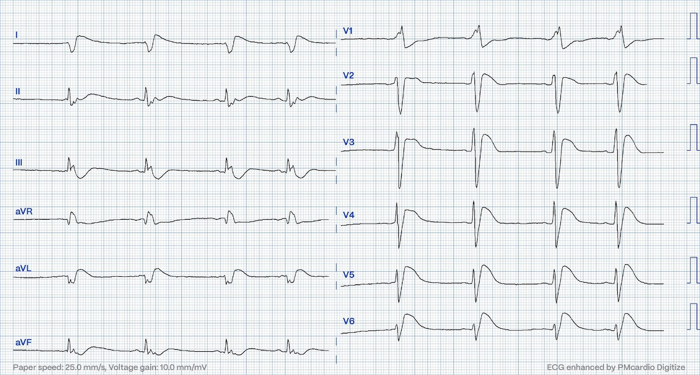
Điện tâm đồ #5

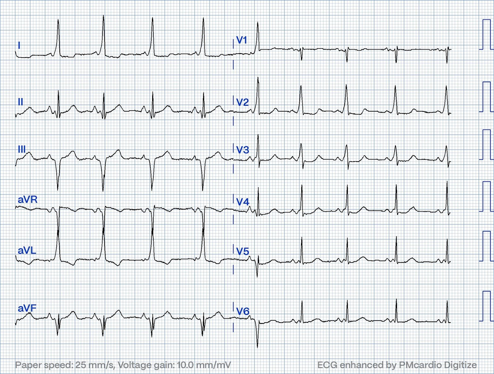
Xem kết cục của cả 5 ca bên dưới, kèm kết quả đọc của AI Bot Queen of Hearts.
BẠN CŨNG CÓ THỂ CÓ AI BOT PM Cardio!! (ỨNG DỤNG AI OMI CỦA PM CARDIO)
Nếu bạn muốn bot này giúp bạn chẩn đoán sớm OMI và cứu bệnh nhân cùng cơ tim của họ, bạn có thể đăng ký nhận phiên bản beta sớm của bot tại đây. Bot hiện chưa phát hành, nhưng đây là cách để bạn có tên trong danh sách.
https://share-eu1.hsforms.com/18cAH0ZK0RoiVG3RjC5dYdwfyfsg (biểu mẫu đăng ký nhận bản beta sớm)
Điện tâm đồ #1: Nhịp xoang, phức bộ QRS hẹp. Tuy nhiên có thay đổi ST-T bệnh lý rõ ràng với sóng T tối cấp (hyperacute T waves) ở các chuyển đạo II, III và aVF, kèm đoạn ST thẳng đuỗn và diện tích dưới sóng T tăng. Có ST chênh xuống không tương xứng ở chuyển đạo V2. Có đoạn ST dốc xuống và sóng T đảo ngược ở chuyển đạo aVL. Các dấu hiệu này cho phép chẩn đoán OMI thành dưới và thành sau. Bệnh nhân được chuyển ngay đi thông tim, phát hiện tắc RCA và đã được đặt stent.
Mô hình AI Queen of Hearts đã làm thế nào? Dương tính thật

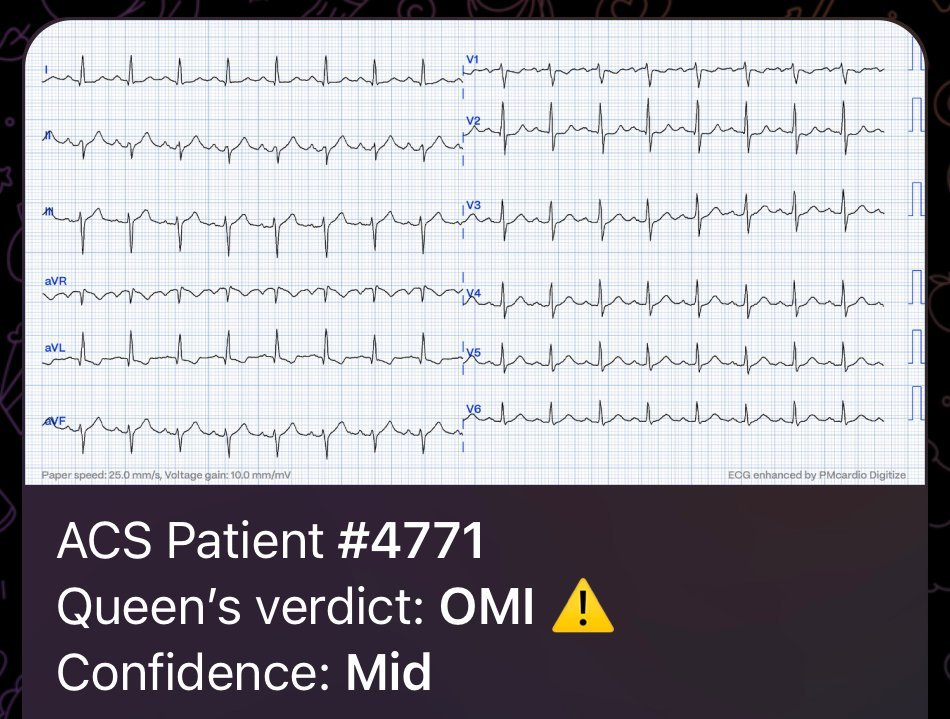
Điện tâm đồ #2: Cũng là nhịp xoang. Có ST chênh lên ấn tượng, lan rộng ở nhiều chuyển đạo mà không có thay đổi soi gương (reciprocal) thực sự nào. Có ST chênh xuống ở V1. Hãy nhớ, trong thiếu máu cục bộ dưới nội tâm mạc lan tỏa với ST chênh xuống lan rộng, có thể có ST chênh lên ở các chuyển đạo aVR và V1. Ở đây thì ngược lại(!) Véc-tơ ST chênh lên tạo ra ST chênh xuống ở các chuyển đạo aVR và V1, do đó ST chênh xuống này phải được xem là hình ảnh phản chiếu (soi gương với) ST chênh lên lan rộng không do thiếu máu cục bộ. Có sóng R hình thành rõ với điện thế/biên độ tốt, điều ít gặp trong thiếu máu cục bộ. Cũng có sóng J. Điện tâm đồ này đơn giản là trông không giống thiếu máu cục bộ.
Áp dụng công thức 4 biến của Smith cho tắc LAD cho giá trị 17,7. Kết quả này phù hợp với ST chênh lên nhiều khả năng không do thiếu máu cục bộ. (RR 1100ms. QT 400ms. QTc 381ms. QRS V2 26mm. ST chênh lên tại thời điểm 60 ms sau điểm J ở V3 là 4mm. Sóng R V4 9mm)
CT động mạch vành không thấy tổn thương. Điểm vôi hóa bằng 0. Troponin I tăng lên >48.000ng/L. MRI cho thấy hình ảnh phù hợp với viêm cơ-màng ngoài tim lan rộng.
Mô hình AI Queen of Hearts đã làm thế nào? Dương tính giả.

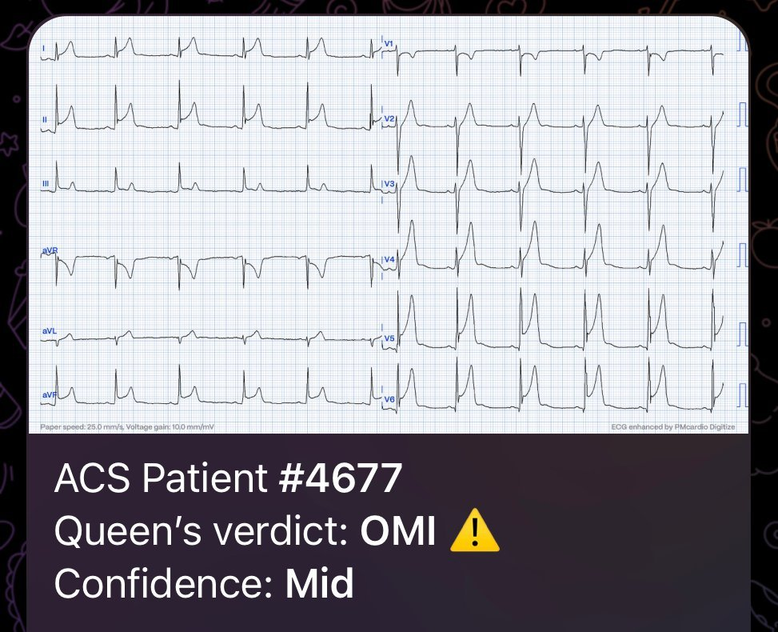
Điện tâm đồ #3 Lại là một điện tâm đồ nhịp xoang, phức bộ QRS hẹp và có thay đổi ST-T. Một lần nữa có sóng R hình thành rõ. Có ST chênh lên ở các chuyển đạo V2-V6 kèm sóng T đảo ngược. ST chênh lên kèm sóng T đảo ngược hiển nhiên có thể có bản chất thiếu máu cục bộ. (Ví dụ OMI đã tái tưới máu/bán cấp) Tuy nhiên, có các sóng J rất nổi bật. Mô tả đầu tiên về sóng J nổi bật được Osborn đưa ra năm 1938 ở một bệnh nhân hạ thân nhiệt. Vì vậy sóng J nổi bật có hình thái này được gọi là sóng Osborn. Hạ thân nhiệt nặng không hiếm khi đi kèm sóng T đảo ngược. Một đặc điểm thường gặp khác của hạ thân nhiệt là rung nhĩ (không thấy trong ca này) Nhiệt độ trung tâm của bệnh nhân này là 29,5 độ C. Troponin âm tính qua các lần xét nghiệm máu liên tiếp.
Bình luận của Smith: Điện tâm đồ này cũng phù hợp với sóng T đảo ngược lành tính (Benign T-wave Inversion). Xem nhiều ca này.
Phản hồi của Magnus: Thật THÚ VỊ khi anh nói vậy, tiếc là tôi không có điện tâm đồ theo dõi hay mã bệnh nhân của ca này, nên giờ tôi không thể kiểm tra điện tâm đồ ghi lại. Tôi nhớ có xem điện tâm đồ ngày hôm sau và nó khá giống, nhưng các dấu hiệu không rõ rệt đến mức này. Lúc đó tôi không nghĩ nhiều về nó. Có lẽ khi đó nguyên nhân chính của các dấu hiệu điện tâm đồ ở đây là sóng T đảo ngược lành tính chứ không phải hạ thân nhiệt. Cũng có thể hạ thân nhiệt sẽ làm lộ ra, hoặc thậm chí làm nổi bật thêm, các dấu hiệu BTWI?
Mô hình AI Queen of Hearts đã làm thế nào? Dương tính giả

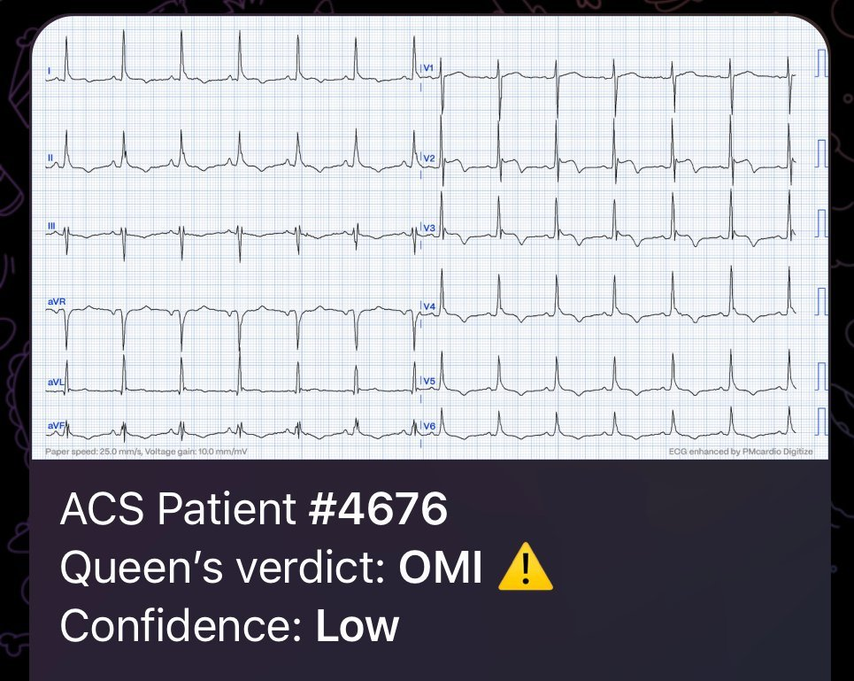
Điện tâm đồ #4 Điện tâm đồ này được ghi ở một bệnh nhân sau tái lập tuần hoàn tự nhiên (ROSC). Nhịp xoang. Đoạn ST rất bệnh lý ở khắp các chuyển đạo trước tim với ST chênh lên có thể gợi nhớ hình thái giống Brugada ở các chuyển đạo trước tim đầu (V1-V3). QRS có thể trông rất rộng, nhưng thực ra không phải. Nó chỉ hơn 0,12s một chút (ba ô nhỏ). Có ST chênh lên ở chuyển đạo I và aVL. Trục lệch phải và phức bộ QRS ở chuyển đạo I và aVL chủ yếu âm, gợi ý blốc phân nhánh trái sau (LPFB). Khi thông tim, bệnh nhân này có tắc động mạch mũ (CX) lớn với lượng troponin phóng thích rất lớn. Troponin T >42.000ng/L. Bệnh nhân tử vong do sốc tim trong vòng 24 giờ dù được hỗ trợ tuần hoàn cơ học. Bên dưới, điểm J được đánh dấu để cho thấy các độ lệch ST bệnh lý.

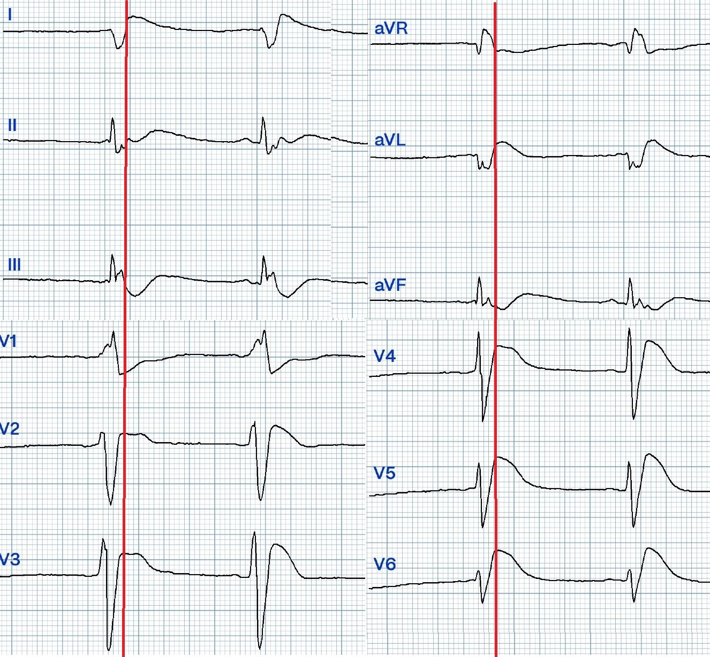
Smith: Điện tâm đồ kỳ quái này trông giống điện tâm đồ sau ngừng tim, nhiều khả năng có toan máu hoặc tăng kali máu bên cạnh OMI. pH và K là bao nhiêu?
Phản hồi của Magnus: Khi nhập trung tâm PCI, pH khí máu là 6,84. Kali 4,6. Một điện tâm đồ ghi lại lúc nhập viện cho thấy các dấu hiệu OMI điển hình hơn với dạng sóng bớt kỳ quái hơn, vì vậy điện tâm đồ #4 khi đó nhiều khả năng phản ánh OMI cấp + rối loạn chuyển hóa nặng.
Mô hình AI Queen of Hearts đã làm thế nào? Dương tính thật

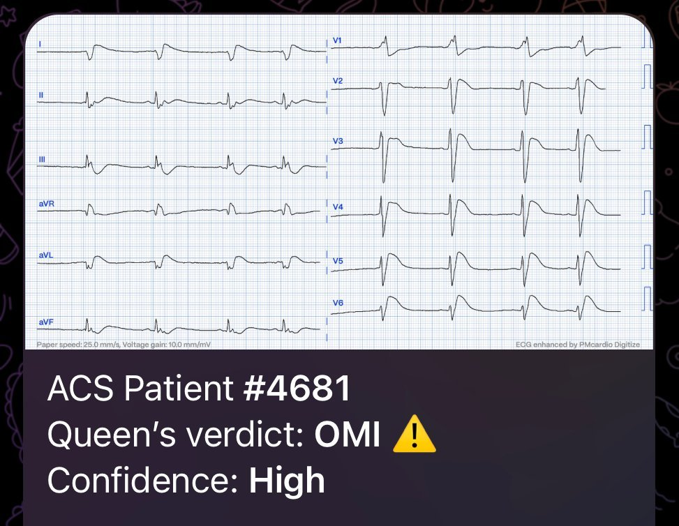
Điện tâm đồ #5 Giống như điện tâm đồ #1, có thay đổi ST-T ở các chuyển đạo dưới và ST chênh xuống ở chuyển đạo V2-V3 kèm sóng R trước tim cao ngay từ chuyển đạo V2. Tại sao đây không phải OMI như ca thứ nhất? Các thay đổi ST-T này đều là thứ phát do khử cực bất thường. Điện tâm đồ không có dấu hiệu nào của thiếu máu cục bộ. Mọi thay đổi ST-T đều thứ phát do tiền kích thích thất. Đây là hình ảnh giả nhồi máu do WPW.
Mô hình AI Queen of Hearts đã làm thế nào? Âm tính thật

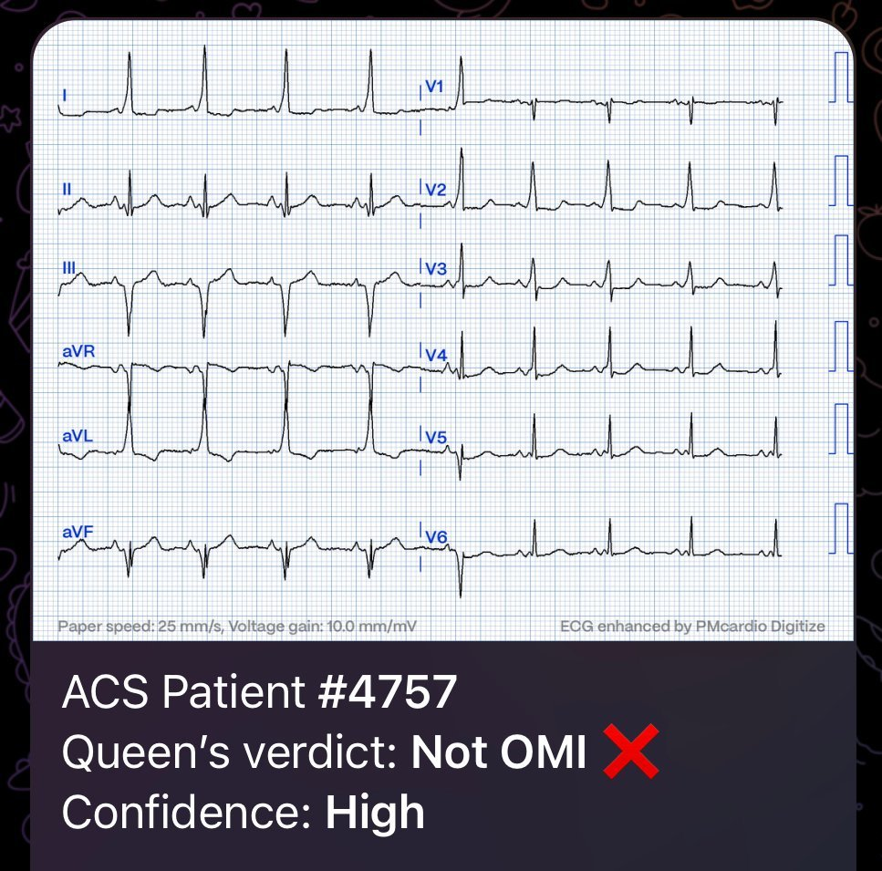
Như vậy, dựa trên các kết quả đọc ở trên, các bệnh nhân có điện tâm đồ #1 và #4 nên được cân nhắc chuyển phòng thông tim (cath lab).
Như bạn thấy, điện tâm đồ #2 và #3 là dương tính giả đối với QoH. Đây là những điện tâm đồ khó. Đáng chú ý là điện tâm đồ #2 có ST chênh lên rất nhiều mà mô hình AI vẫn không đưa ra độ tin cậy cao. Ca dương tính giả còn lại được đọc là OMI với độ tin cậy thấp. Khi được huấn luyện thêm, thuật toán AI sẽ còn tốt hơn nữa và điện tâm đồ #3 nhiều khả năng sẽ được nhận diện là không phải OMI. Mục tiêu trong thực hành lâm sàng KHÔNG được là không bao giờ có một lần kích hoạt phòng thông tim dương tính giả; nếu đó là mục tiêu của bạn, bạn cũng sẽ có rất nhiều ca âm tính giả, mà đó chính xác là điều chúng ta muốn tránh.

===================================
BÌNH LUẬN CỦA TÔI, bởi KEN GRAUER, MD (8/10/2023):
===================================
Tôi rất thích ca này của Dr. Nossen — vì khái niệm gợi nhiều suy ngẫm của nó: “Phải làm gì khi không còn thời gian để mất — và có nhiều bệnh nhân cùng đến vì đau ngực mới xuất hiện?“
- Để khuyến khích trao đổi tích cực — tôi xin đề xuất đổi câu hỏi từ “2 bệnh nhân nào cần được chuyển cấp cứu tới phòng thông tim?” — thành — “Bệnh nhân nào cần thông tim ngay? — và (những) bệnh nhân nào khác cần được khám càng sớm càng tốt để tìm hiểu chuyện gì đang xảy ra?
==============================
SUY NGHĨ CỦA TÔI:
Bệnh nhân có điện tâm đồ #1 cần thông tim ngay.
- Tôi hoàn toàn đồng ý với Dr. Nossen rằng ở bệnh nhân mới đau ngực này, với nhịp nhanh xoang kèm LAHB — sóng T ở mỗi chuyển đạo dưới đều tối cấp (tức là rõ ràng “đồ sộ” không tương xứng so với kích thước QRS ở các chuyển đạo này).
- Trong bối cảnh này — các dấu hiệu ở chuyển đạo V2 gồm sóng Q và đoạn ST thẳng đuỗn, chênh xuống kèm phần cuối sóng T dương cho phép chẩn đoán OMI dưới–sau cấp — điều mà theo Dr. Nossen đã được xác nhận khi thông tim.
Bệnh nhân có điện tâm đồ #2 — cần được khám sớm nhất có thể.
- Tôi thấy khó mà không đẩy nhanh việc đưa ra chẩn đoán tạm thời bằng cách “tận mắt nhìn bệnh nhân này” — xét đến than phiền “đau ngực mới xuất hiện” — và điện tâm đồ này cho thấy ST chênh lên rõ rệt (hơn 5 mm ở V5,V6 — và hơn 2-3 mm ở nhiều chuyển đạo khác) đi kèm các sóng T dương khổng lồ này.
- Tôi hoàn toàn đồng ý với Dr. Nossen rằng — đây không phải điện tâm đồ của OMI cấp. Thay vào đó — nó hoàn toàn phù hợp với viêm cơ-màng ngoài tim cấp vì: i) ST chênh lên lan tỏa mà không có ST chênh xuống soi gương; ii) hình dạng ST-T ở chuyển đạo II giống hình dạng ST-T ở chuyển đạo I hơn nhiều so với chuyển đạo III (trong nhồi máu cơ tim cấp thường thấy điều ngược lại); iii) các sóng q hiện diện đều rất nhỏ (sóng q “vách” bình thường ở các chuyển đạo V5,V6); và, iv) mức ST chênh lên tại điểm J và kích thước sóng T quá lớn là những đặc điểm gợi ý viêm cơ tim bên cạnh viêm màng ngoài tim cấp đơn thuần.
- Điều cốt lõi: Các xét nghiệm khác ngoài thông tim có thể là tất cả những gì cần để xác lập chẩn đoán — nhưng tôi vẫn muốn khám một bệnh nhân có điện tâm đồ như thế này sớm nhất có thể.
Tôi thấy điện tâm đồ #3 thú vị — ở chỗ tôi sẽ không đoán được bệnh nhân đau ngực mới xuất hiện này bị hạ thân nhiệt khi nhìn vào bản ghi này.
- Sóng J nổi bật chỉ có ở 2 chuyển đạo (các chuyển đạo V2,V3) — dù sóng J nhỏ hơn nhiều cũng thấy ở các chuyển đạo aVL và V4.
- Hạ thân nhiệt thường đi kèm ST chênh lên ở nhiều chuyển đạo — nhưng nhìn chung không có hình dạng ST chênh lên kết thúc bằng phần cuối sóng T đảo ngược như ta thấy ở các chuyển đạo V2,V3. Việc thấy đoạn ST “tròn” ở nhiều chuyển đạo khác, dù độ lệch đoạn ST ít hơn nhiều (tức là ở các chuyển đạo I,II; V4,5,6) — với tôi gợi ý nhiều hơn hẳn một biến thể tái cực lành tính.
- Dù đã nói như trên — bệnh nhân này đã bị hạ thân nhiệt ( = 29,5°C) rõ rệt — nên cách duy nhất để xác minh dấu hiệu điện tâm đồ nào là hậu quả của biến thể tái cực hay hạ thân nhiệt hay kết hợp cả hai — là xem lại các bản ghi theo dõi sau khi nhiệt độ trung tâm đã trở về bình thường. Đáng tiếc — không có các bản ghi theo dõi của ca này.
- Điều cốt lõi: Dù bất kỳ bệnh nhân nào đến khoa cấp cứu vì “đau ngực mới xuất hiện” với điện tâm đồ có chút ST chênh lên và sóng T đảo ngược đều cần được khám sớm chứ không nên muộn — tôi sẽ không vội vã đến bên giường bệnh nhân chỉ dựa trên điện tâm đồ này.
Tôi thấy điện tâm đồ #4 — hơi kỳ quái. Tôi sẽ không chuyển cấp cứu bệnh nhân này tới phòng thông tim chỉ dựa trên bản ghi này. Thay vào đó — tôi nghĩ đây là bệnh nhân cần được quan tâm ngay lập tức để trước hết tìm ra chuyện gì đang xảy ra.
- Dù rõ ràng có ST chênh lên rõ rệt ở nhiều chuyển đạo — QRS bị giãn rộng, với hoạt hóa ban đầu chậm và hình thái không điển hình cho các rối loạn dẫn truyền đã biết (tức là sóng lệch ban đầu kỳ quái, tròn ở V1, không điển hình cho RBBB — sóng r rất nhỏ, với sườn xuống của sóng S chậm ở chuyển đạo I, không điển hình cho LPHB — các phức bộ RS từ V2 đến V6 trông giống nhau quá mức, với sóng R ban đầu rộng bất thường ở V2).
- Nhịp không chắc chắn (tức là chúng ta chỉ thấy 4 nhát — vì cùng 4 nhát đó được lặp lại ở chuyển đạo chi và chuyển đạo ngực — nhưng ở chuyển đạo II dường như có nhịp chậm xoang và loạn nhịp xoang, cộng thêm một sóng P có khoảng PR quá ngắn để dẫn truyền đứng trước nhát #1 — vì vậy cần theo dõi trong thời gian dài hơn).
- Điều cốt lõi: Dù hoàn toàn biết rằng ST chênh lên rõ rệt ở nhiều chuyển đạo có thể chỉ ra nhồi máu cấp lan rộng đang diễn ra — tôi nghĩ bức tranh điện tâm đồ tổng thể gợi ý nhiều hơn đến một ngộ độc và/hoặc rối loạn chuyển hóa nào đó, cần đánh giá thêm trước khi chỉ định thông tim. Dù chi tiết của ca này không có đầy đủ như mong muốn — có vẻ bệnh nhân này bị toan máu rõ rệt — điều có thể phù hợp với những đặc điểm bất thường của điện tâm đồ này.
Như Dr. Nossen đã nêu — điện tâm đồ #5 cho thấy nhịp xoang kèm WPW. Tôi sẽ không chuyển bệnh nhân này đi thông tim ngay. Dù vậy, bệnh nhân này đã đến khoa cấp cứu vì “đau ngực mới xuất hiện” — và …
- Chúng ta không có điện tâm đồ nền. Vì vậy, dù đúng là phần lớn áp đảo các ca WPW tôi từng gặp đều biểu hiện thay đổi sóng ST-T “bất thường” do WPW chứ không phải hậu quả của nhồi máu cấp — đôi khi, sóng ST-T bất thường ở bệnh nhân WPW có thể bất thường do nhồi máu cấp (Xem ví dụ của Dr. Smith trong bài ngày 1 tháng Ba năm 2012 — về một bệnh nhân WPW kèm nhồi máu cơ tim mới, gây ra các thay đổi sóng ST-T cấp chồng lên các dấu hiệu WPW nền).
- Ở điện tâm đồ #5 — Chẳng phải có đoạn ST thẳng đuỗn quá mức kèm ST chênh xuống nhẹ ở các chuyển đạo từ V2 đến V5 sao? Dù có thể hình ảnh sóng ST-T ở chuyển đạo ngực này hoàn toàn do WPW — tôi quen thấy đoạn ST gập góc dốc xuống hơn trong các bản ghi WPW mà QRS chủ yếu dương ở các chuyển đạo ngực.
- Điều cốt lõi: Tôi chắc chắn sẽ không kích hoạt phòng thông tim chỉ dựa trên bản ghi có WPW này. Nhưng bệnh nhân này đã đến khoa cấp cứu vì “đau ngực mới xuất hiện” — và tôi nghĩ đoạn ST dẹt kèm chênh xuống ở các chuyển đạo ngực phía trước hơi không điển hình cho WPW đơn thuần. Sẽ cực kỳ hữu ích nếu tìm được một bản ghi nền — cùng với một loạt troponin âm tính để bảo đảm không có biến cố cấp nào xảy ra.